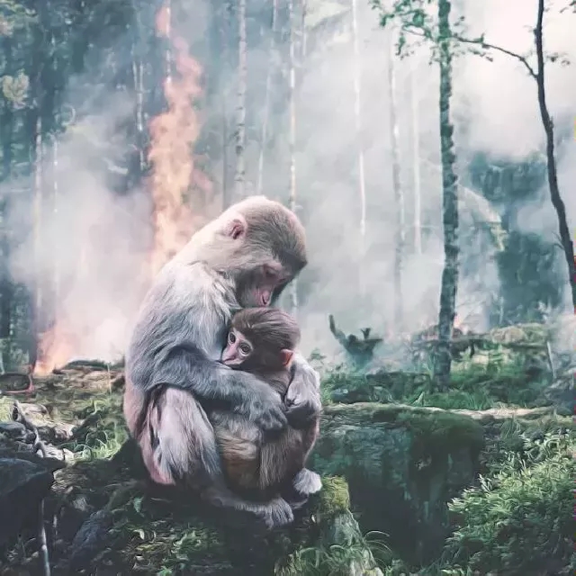

future food
The campaign for introducing plant based options in university canteen menus
the context
With over 235 million students enrolled in higher education worldwide and tens of millions of faculty and staff working at these institutions, universities and colleges are key food providers. Most universities have a sustainability plan outlining strategies and targets to reduce carbon emissions.
Generation Z (born between 1997-2012), which makes 25% of the whole existing population on the planet and makes it the biggest demographic group at the moment, is known to be the most enthusiastic about plant-based foods. A University of Massachusetts student dining survey found that students are asking for more plant-based menu items, including burgers, grounds, sausages, pizza toppings etc. Plant-based breakfast options were found to be popular both among vegans and omnivores.
the problems
The UN FAO estimate that 10 million hectares of forest are cut down each year. Livestock takes up nearly 80% of global agricultural land, yet produces less than 20% of the world's supply of calories.
At the moment animal agriculture:
- uses ~83% of the world’s farmland;
- provides only 37% of our protein and 18% of our calories;
- contributes 56 to 58% of food’s different emissions;
- livestock emissions from manure and gastroenteric releases account for roughly 32% of human-caused methane emissions;
- is a chief driver of deforestation and the loss of biodiversity (-69% since 1970);
- is a major cause of pandemics including SARS, Swine Flu, and the Spanish Flu;
- is responsible for the abuse and slaughter of 88 billion farm animals per year...
the tendencies
- In 2011 University of North Texas announced the first all-vegan dining hall in history embracing not only the students of UNT but many other residents of the area.
- In 2021 the authorities of Berlin launched the program of reducing carbon footprint by implementing plant based foods in the university canteens with 68% vegan, 28% vegetarian and only 4% of meat and fish dishes.
- The Plant Based University campaign, launched in UK in 2021, announced its goal to move towards 100% plant based menu in the cafeterias by 2025.
- In 2022 all public schools in New York launched Vegan Fridays which meant that every Friday 930,000 students are served plant based meals.
- Same year the government of California invested $700 million in plant based school meals.
the solutions

In 2018, the world’s biggest food production analysis, conducted at the University of Oxford, concluded that rejecting resource-intensive and pollutive animal agriculture, and adopting a plant-based diet, was the best way a person could reduce their own carbon footprint.
Here are the suggested solutions:
- replacing the meat options in the menu with the plant based ones;
- introduction of the new plant based options in the menu;
- organizing alternative catering service for the students who prefer plant based dishes through collaborations with vegan venues/producers and delivery companies;
- encouraging other institutions to follow the changes by providing media and social media support of the campaign.
how we support
-
supporting students’ initiatives to include plant based dishes in the menus of their universities;
-
providing all guides and theoretical materials that can be helpful to implement these changes;
-
providing the help of a professional chief who will be happy to make culinary workshops and presentations for the cooks of the local canteens;
-
organizing events connected with the launch of the plant based options in the menus of the universities;
-
providing media and social media support for the events and other news concerning the positive changes in the menus.
how you can support
-
spread the word about plant based alternatives among your classmates and university staff
-
ask your chiefs in the canteen to engage plant based dishes in the menu
-
sign up for volunteering in Vegan Georgia via special form at VG website
-
help us finding more likely minded people among students in other universities — it is very likely that you have some friends / relatives / colleagues who knows some students of this kind
-
participate in Vegan Georgia events (culinary workshops, opening days etc.) connected to the campaign.
options for your university
Our chief cooks can offer many healthy, filling and environmentally friendly dishes for your canteen or buffet or even a vending machine. Among the options for the menu these ones can be listed:
-
Seitan Burger (served with mashed potato and green salad)
-
Tofu Sandwich and Tofu Casserole
-
Soya and Mushroom Dumplings
-
Falafel (served with rice and aubergine salad)
-
Different Soups (lentil, carrot, chickpea, tomato, pumpkin and other)
-
Pastries (apple pie, pancakes with cherry jam, cinnabon with lemon stuffing etc.)

about Vegan Georgia
Vegan Georgia was founded in 2015 as the first and so far the only NGO in Georgia aimed at protecting farm animals and other representatives of animal kingdom regardless of species.
We see our main goals in:
- education on plant-based nutrition and fundamental animal rights;
- confronting unethical industries, enterprises and practices;
- legislative work and legal support for animal protection and initiatives;
- supporting plant-based venues, initiatives and events.